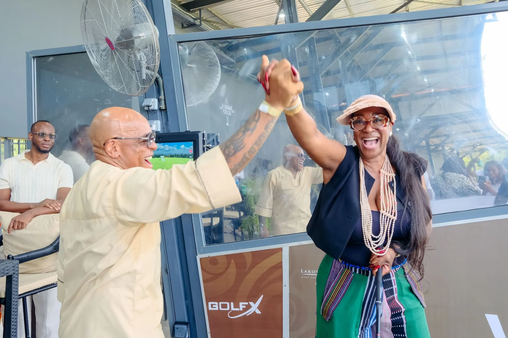

Play · Lakowe Lakes
A course shaped by water and green.
Lakowe’s golf page describes an 18-hole, par-72 championship course, a lighted 9-hole par-3 course and a driving range. Here’s the lay of the land before you head to the official tee-time route.

The course, in numbers
Enough detail to know what you’re booking.
These specifications are taken from Lakowe’s official golf page. Check that page for the latest playing, membership and course information.
Course measurements and facilities follow the current official golf page; confirm them with Lakowe before using this concept as a live service guide.

Out on the course
The setting is part of the round.
Official Lakowe photography shows the course beside the lakes, with open fairways, bunkers and the tree line. The course page also names a driving range and clubhouse, so a visitor can understand the wider golf experience before choosing a tee-time or package.
For the exact tee process, rates and access, continue to Lakowe’s official golf pages rather than relying on this concept.
Official golf pageAround the round
Course, practice, clubhouse.
The official golf destination names a driving range, clubhouse and membership options alongside the course. The images here are matched to those parts of the estate.

Another way to play
GolfX is a separate experience.
Lakowe directs visitors to GolfX for its Trackman-enabled bays, games, food and drink. Keeping that separate destination visible here makes the handoff clear instead of sending every golfer to the same booking button.
The GolfX site holds its own details and booking route. Check what is currently available there.
Open GolfXReady to check a tee time?
This concept does not take bookings. Continue to Lakowe’s official tee-time page for current dates, terms and access.